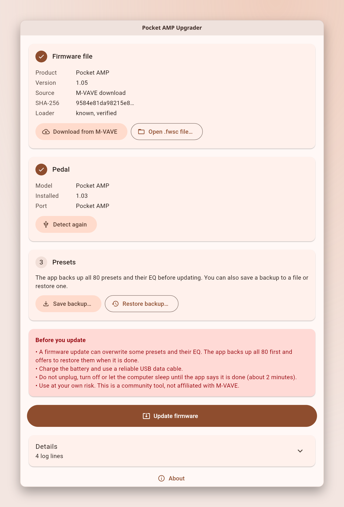

M-VAVE Pocket AMP and clones · free and open source
Update your Pocket AMP firmware from Mac, Linux or Windows
Pocket AMP Upgrader installs M-VAVE's official firmware (currently V1.05) over plain USB, without drivers. It backs up all 80 presets first and puts back the ones the update changed.
Windows 10/11 · macOS 11+ · Linux x64 (AppImage). Community tool, not affiliated with M-VAVE.

How to update the Pocket AMP
- Charge the pedal, connect it with a USB data cable and turn it on.
- Close the M-VAVE app and anything else that uses MIDI.
- Open Pocket AMP Upgrader. It detects the pedal and shows the installed version.
- Click Download from M-VAVE, or open a
.fwscfile you already have. - Click Update firmware and wait about two minutes. The pedal restarts twice.
- Click Restore my presets from before the update.
To see the installed version on the pedal, hold Home and press >.
Why use it
| M-VAVE updater | Pocket AMP Upgrader | |
|---|---|---|
| Systems | Windows only | Windows, macOS, Linux |
| Firmware | Bundled file, older than the downloads page at the time of writing | Current official file from M-VAVE's server |
Questions
How do I update the Pocket AMP firmware on a Mac?
M-VAVE's updater runs only on Windows. This app runs on macOS 11 or newer: connect the pedal, open the app, click Download from M-VAVE, then Update firmware. The app is not signed, so the first time right-click it and choose Open.
Will the update erase my presets?
A firmware update can overwrite some presets and their EQ. The app backs up all 80 presets and their EQ before updating, and restores only what changed. You can also save a backup to a file at any time.
Do I need a driver?
No. The pedal is a standard USB-MIDI device. Use a data cable: many USB cables only charge.
Does it work with Pocket AMP clones like the Coolmusic PIXIE1 or New Bee SK17?
Yes, for clones confirmed to be a Pocket AMP. The Coolmusic PIXIE1 and the New Bee SK17 are: owners updated them to V1.05. The app asks for a separate confirmation, the pedal then reports itself as a Pocket AMP, and presets from older clone firmware are not restored: the app keeps a raw copy and asks before continuing. Other pedals are refused, because a different pedal that speaks the same protocol would be bricked. Have a clone that is not listed? Report it on GitHub.
What if the update stops halfway?
Don't unplug in a hurry. Reconnect the pedal and click Detect pedal. A pedal left in update mode is shown as such, and Resume update writes the firmware again.
Is this an official M-VAVE app?
No. It is a free community tool under GPL-3.0. It installs the official firmware file from M-VAVE and does not ship the firmware itself. Use it at your own risk.